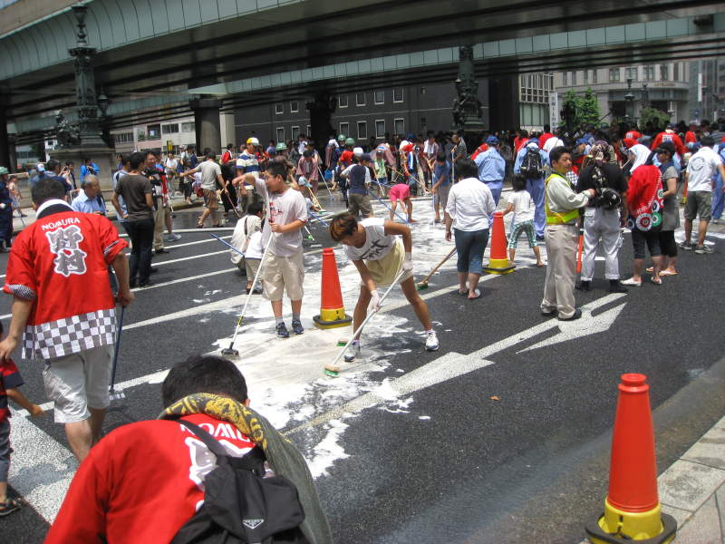
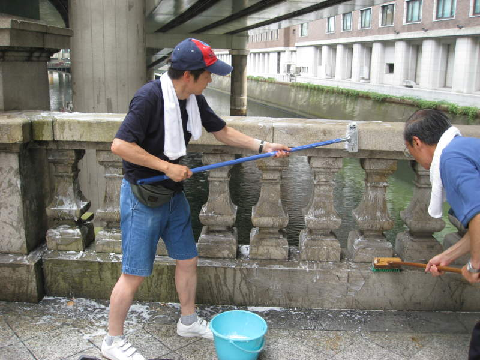
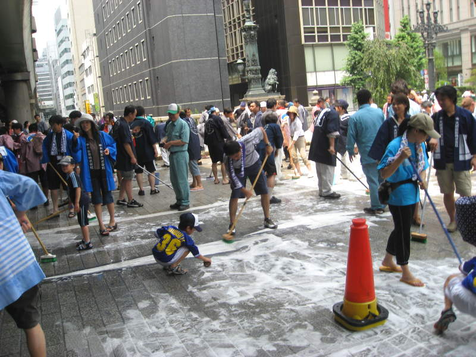
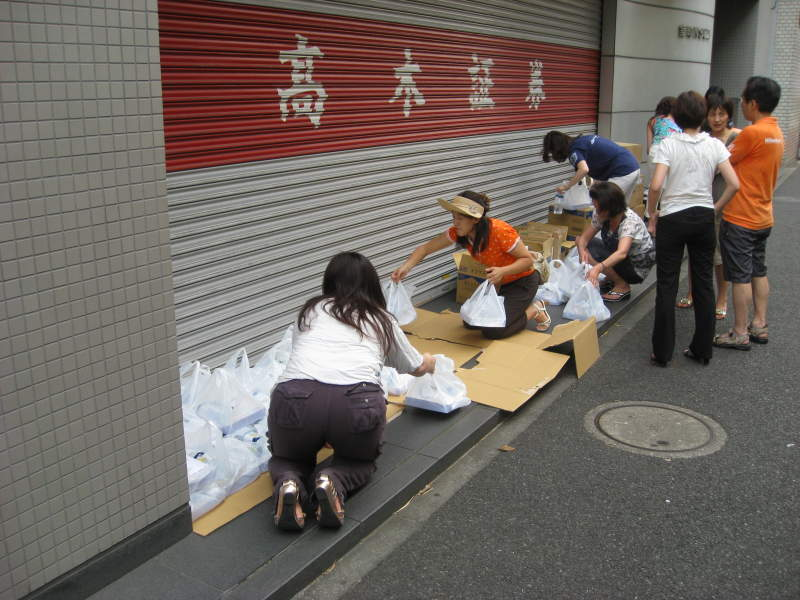
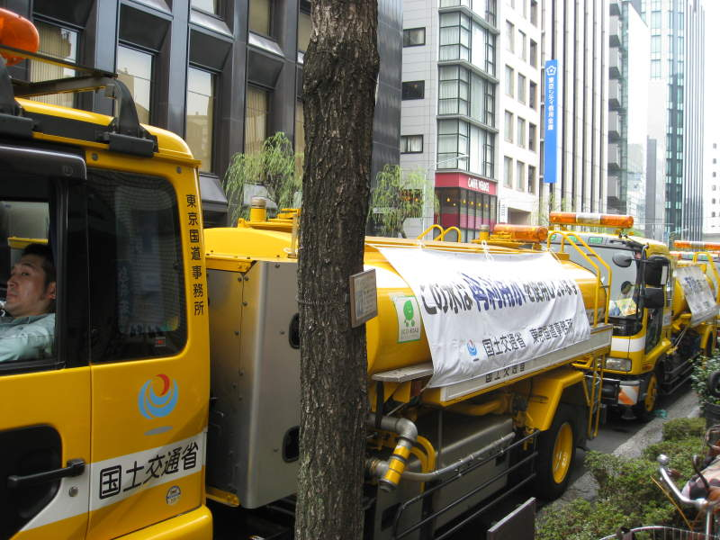

Cleaning Festival

I
was in central Tokyo, desperately trying to find a "kite museum" that I
thought would be pretty fun to see. Apparently the kite museum
closed down. Instead, I walked by this massive street cleaning
operation. Who are these people? Tokyo is clean, but this
would be just silly. They didn't look like inmates.

Citizens of Tokyo were scrubbing every inch of a sectioned off area of a street.

I
asked at a nearby coffee shop (Starbucks of course) what was going on.
They told me it was an annual cleaning festival. No real
reason behind it, and it only took place at this location.
Something tells me it's fairly prestigious to work at this
super-clean section of Tokyo. Anyway, there were plenty of kids
there. It looked like they were on school field trips or
something. There were a bunch of police officers there,
admittedly on fairly light duty. People took pictures of their
kids and neighbors scrubbing the soapy scrub.

There was also an organized operation to provide lunches to the cleaners, and probably the organizers as well.

A line of fire trucks sat nearby, providing water as necessary.
Back